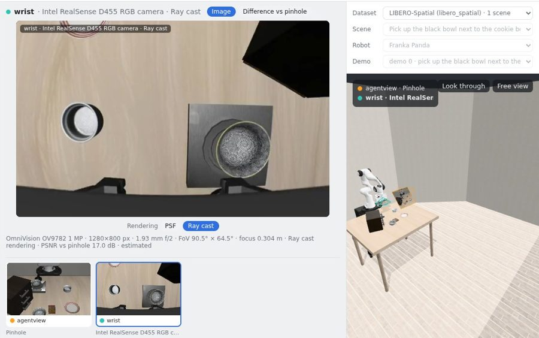
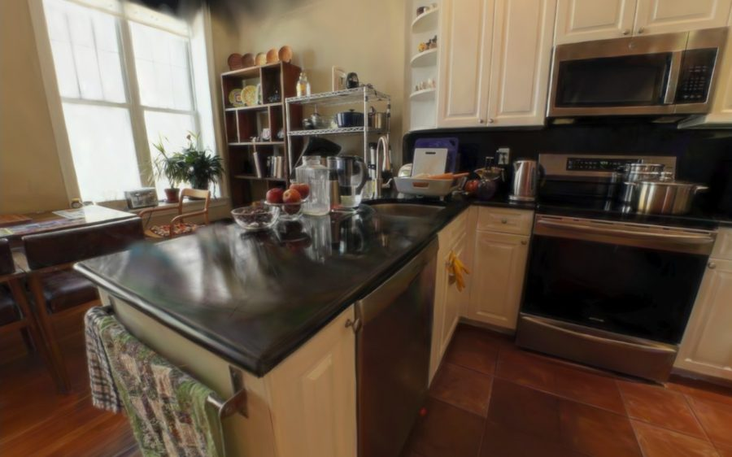

See through real cameras before you put them on a robot
Two browser previews of TwinRobo: robot demos replayed through catalog cameras, and a real kitchen where you drive a robot and record what each camera would see. Nothing to install; a recent browser with WebGL 2 is enough.

/vla
Demo replay
LIBERO and RoboCasa manipulation demos, replayed through the wrist camera as a pinhole or as a catalog camera.
- PSF and ray-cast rendering, precomputed with TwinRobo Studio
- Difference against the pinhole

/capture
Capture in a real kitchen
Drive a robot through a kitchen reconstructed from photos and record images, depth and poses through any catalog camera.
- Distortion and depth-dependent blur from TwinRobo's lens models, live
- Mono and stereo cameras; review and download the frames